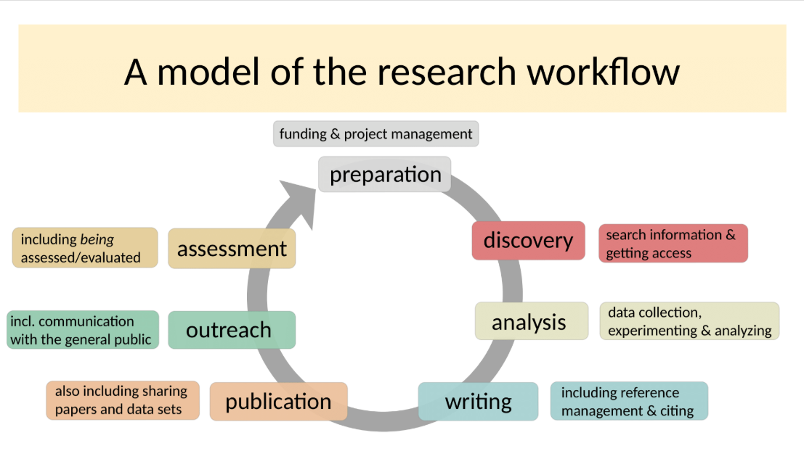
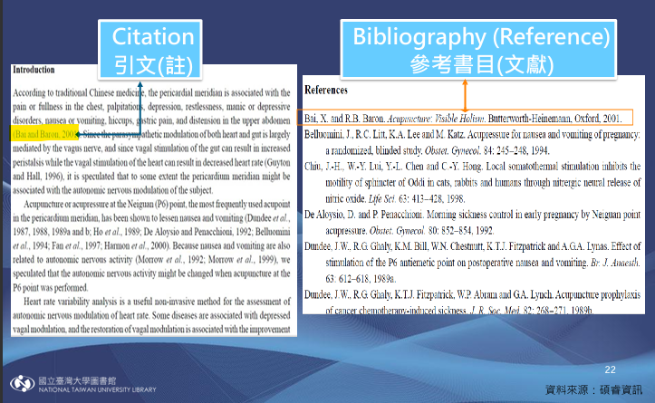
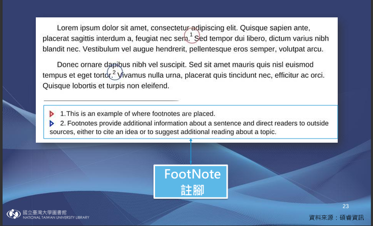
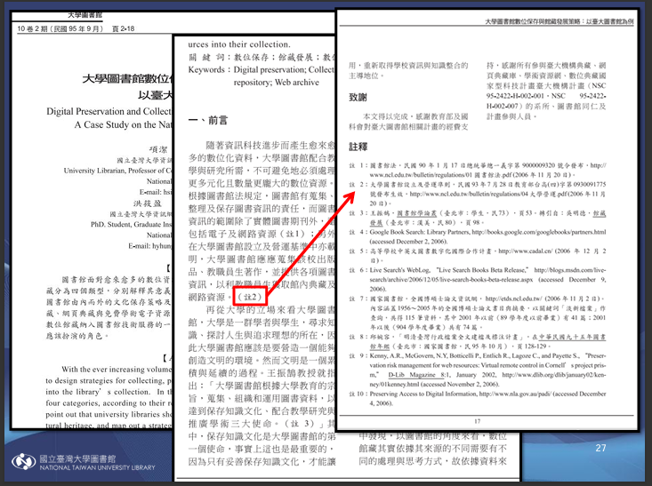
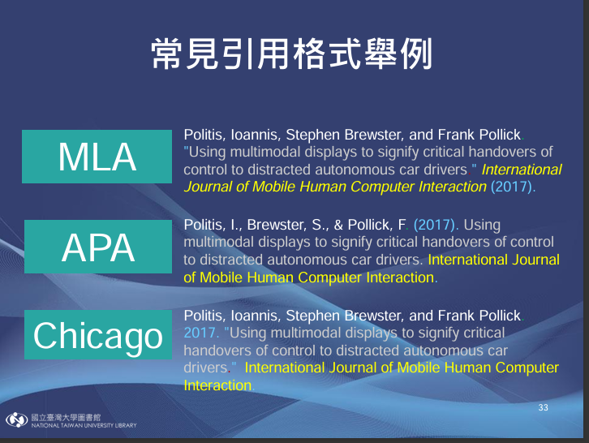

（三）研究輔助
研究流程、引註規範、圖表標示與設計工具介紹
研究流程

Preparation（研究預備）
研究開始前先釐清基本的方向與目的。
Discovery（文獻探討）
查找過去做過的研究與過去學者的發現，以掌握研究現況以及避免重複他人的研究。
Analysis（資料收集與分析）
對研究內容進行資料收集、分析，常見方法為問卷收集、訪談、觀察或實驗等。
Writing（撰寫）
撰寫正式內容，並對此進行重複修改。
Publication（發表與投稿）
會進行同儕評價，如被退稿會重複修改並投稿直到成功。
Outreach（研究推廣與交流）
向外發表研究，將研究內容分享給相關學者討論，例如參加相關主題會議或研討會等。
Assessment（研究評估與回饋）
對研究結果進行現況評估，並針對研究收到的回應作為未來研究改進的依據。
引註規範
文獻引用方式
- 引註（citation）
- 隨文註：內文採用「圓括弧引註」，搭配文末參考書目
- 腳註：當頁腳註。援引證據立馬可見
- 文末註：於內文標註編號，再統一將註釋於文章結尾排列呈現。
- 引述（quoting）
EX : APA格式(Author, Date)
MLA格式(Author, Page)

EX : Chicago Manual Style, 芝加哥大學論文寫作規範

EX : NUMBER，依內文註釋順序一一排列、說明。

將其他研究的字詞、或句子不經增刪修改，直接採取原有的文字，並註明出處。
常見書目格式
- APA
- MLA
- Chicago

圖表標示
附圖
在內文提及附圖時，只需提及其序號（如「見圖1」），不必寫出附圖標題，附圖下方應先標示附圖序號、標題及資料來源。
表格
在內文提及表格時，只需提及其序號（像「如表格1所示」），不必寫出表格標題，接續在文後放上表格並標示表格序號及標題，其格式要求與內文相同。
資料來源：香港中文大學（n.d.）。參考APA格式：表格與附圖。自學中心。
link
link
海報設計小工具
學術海報模板推薦
經典學術風
適合學術論文、研究成果展示與研討會發表。
🎓 學術海報自動配色生成器
智慧圖書館空間設計對使用者行為之影響研究
摘要 Abstract
本研究探討圖書館空間設計。
研究背景
研究目的
研究方法
研究結果
圖表